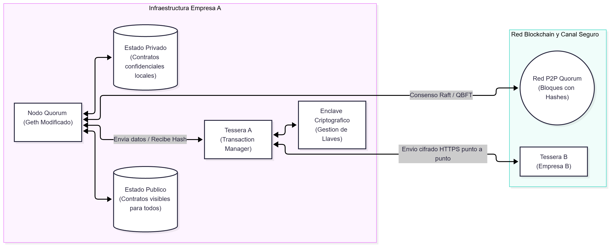
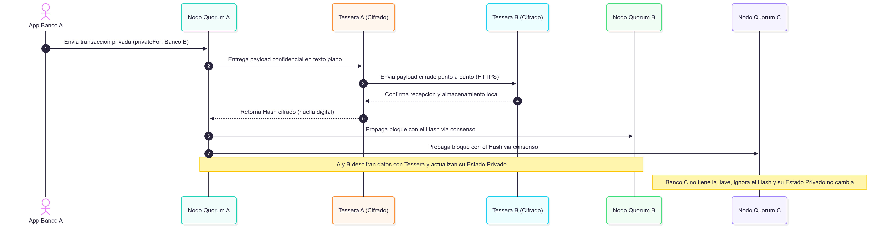
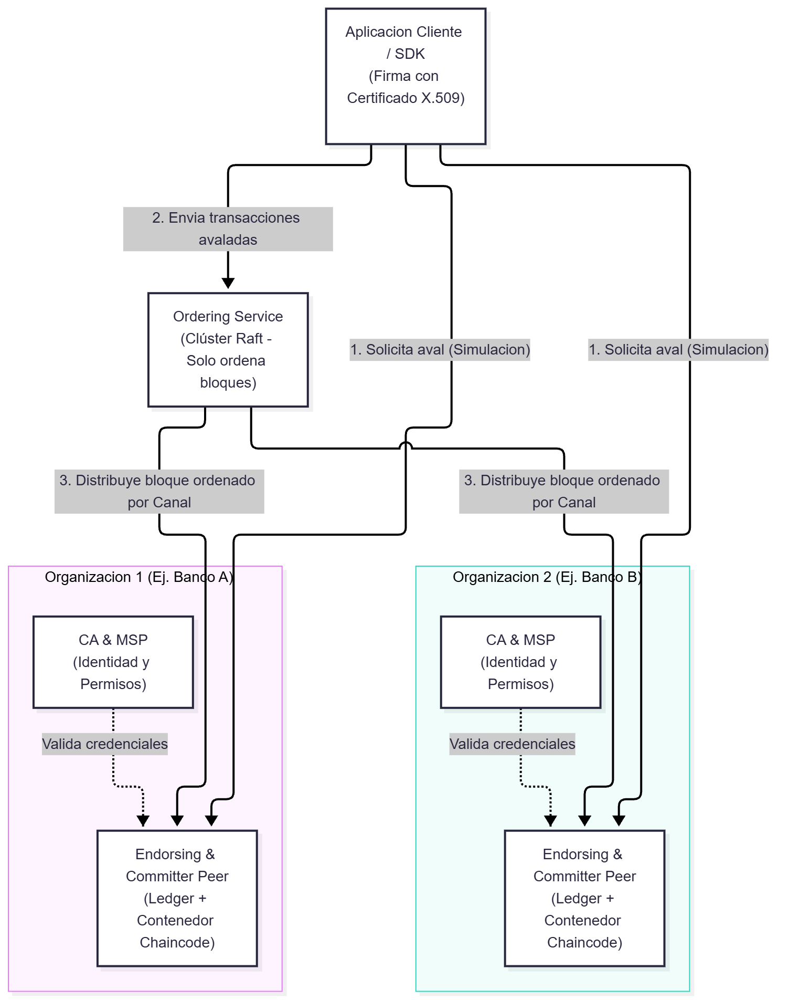
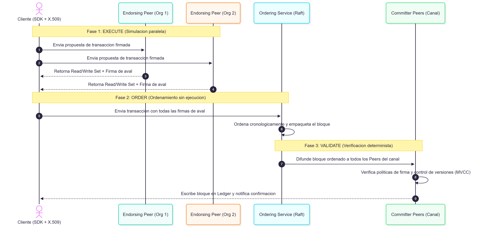

Blockchains Privadas: Arquitectura de Quorum e Hyperledger Fabric
Consenso permisionado, privacidad empresarial y flujos de ejecución distribuida.
Análisis técnico sobre cómo la tecnología blockchain se adapta a entornos corporativos, bancarios e institucionales donde la confidencialidad y el rendimiento son críticos.
¿Por qué las empresas necesitan Blockchains Privadas?
La solución de las redes permisionadas (Permissioned)
Identidad verificada
Nadie es anónimo; cada nodo pertenece a una organización conocida y auditada.
Privacidad y control de acceso
Solo los participantes autorizados pueden conectarse, leer datos confidenciales o validar operaciones.
Consenso sin minería
Se reemplaza el gasto energético por algoritmos de votación rápida con confirmación irreversible en milisegundos (finality).
Algoritmo de Consenso Raft (Líder y Seguidores)
Consenso Bizantino: IBFT y QBFT
Quorum: Ethereum adaptado al entorno empresarial
Origen e Historia
Quorum es una plataforma blockchain empresarial de código abierto creada originalmente por J.P. Morgan para pagos interbancarios y mantenida posteriormente por ConsenSys.
Arquitectura Derivada
Se construyó modificando directamente el código base del cliente oficial de Ethereum (Go-Ethereum / Geth).
Compatibilidad Total
Mantiene un 100 % de compatibilidad con la Máquina Virtual de Ethereum (EVM) y los contratos inteligentes escritos en Solidity.
Gas en Cero
Elimina el costo financiero de operación fijando el precio del gas en cero (no se requiere ETH real).
Control y Privacidad
Añade gestión de permisos de red, consenso Raft / QBFT y privacidad nativa de transacciones.
Arquitectura Interna de un Nodo Quorum

Flujo de una Transacción Privada (A hacia B, oculta para C)

Aclaratoria Técnica: Hyperledger vs. Hyperledger Fabric
Es común confundir ambos términos como si fueran lo mismo, pero representan niveles distintos dentro de la industria:
Hyperledger (El Ecosistema / Proyecto Paraguas)
Iniciativa colaborativa de código abierto impulsada por la Linux Foundation (no es una criptomoneda ni una única blockchain). Alberga múltiples herramientas y estándares empresariales bajo un mismo techo.
Hyperledger Fabric (El Framework específico)
Uno de los proyectos estrella dentro de ese ecosistema (impulsado inicialmente por IBM). Es la plataforma concreta sobre la cual se construyen redes blockchain privadas modulares.
Otros proyectos del ecosistema (referencia)
Así como existe Fabric (arquitectura modular desde cero), Hyperledger aloja otros enfoques como Hyperledger Besu (cliente Ethereum empresarial, competidor de Quorum) o Hyperledger Indy (identidad digital).
Hyperledger Fabric: Arquitectura Modular Empresarial
Pilares fundamentales de su diseño
Identidad empresarial estricta
Todo participante opera con certificados digitales verificados, eliminando el anonimato.
Separación de responsabilidades
Divide los nodos según su función (unos ejecutan contratos y otros únicamente ordenan bloques).
Aislamiento nativo de datos
Permite crear sub-redes privadas llamadas Canales dentro de una misma infraestructura física.
Infraestructura de Identidad: Certificados X.509, CA y MSP
En Hyperledger Fabric toda interacción requiere identidad verificada mediante tres componentes fundamentales:
Certificados Criptográficos
Son el "pasaporte digital" de cada empresa, servidor y usuario (el mismo estándar usado en banca web HTTPS). Vinculan los datos de la organización, el rol del usuario y su llave pública.
Certificate Authority
Es la "oficina emisora". Un servidor encargado de emitir, renovar y revocar los certificados X.509 y llaves privadas de los miembros de una organización.
Membership Service Provider
Es el "guardia de seguridad" dentro de la blockchain. Valida los certificados emitidos por la CA, verifica si son auténticos y determina qué permisos tiene ese usuario dentro de la red.
Nodos Pares (Peers) y Contratos Inteligentes (Chaincode)
Peers (Nodos Pares)
Son los servidores propiedad de cada organización que almacenan el libro mayor (Ledger) y ejecutan la lógica de negocio. Cumplen dos funciones:
Chaincode (Contratos Inteligentes)
Es el nombre que reciben los contratos inteligentes en Hyperledger Fabric.
Se programan en lenguajes empresariales estándar (Go, Java o Node.js) y se ejecutan aislados dentro de contenedores Docker independientes del nodo para máxima seguridad y estabilidad.
Aislamiento de Datos mediante Canales (Channels)
Ejemplo práctico en cadena de suministro
Consorcio General
Una red física conecta a tres organizaciones participantes: una Fábrica, un Transportista y una Tienda.
Canal A (Logística)
La Fábrica y el Transportista crean el Canal A exclusivamente para pactar tarifas de flete.
Canal B (Comercial)
La Fábrica y la Tienda crean el Canal B para negociar precios mayoristas de distribución.
Arquitectura Modular y Bloques Funcionales en Fabric
A diferencia de otras blockchains donde todos los nodos hacen lo mismo, Fabric separa estrictamente las responsabilidades de su arquitectura:

Nuevo Paradigma: Execute - Order - Validate
Execute (Ejecutar en paralelo)
Solo los Endorsing Peers designados simulan el Chaincode, generan un conjunto de lectura/escritura (Read/Write Set) y firman el resultado, sin modificar aún el libro mayor.
Order (Ordenar a ciegas)
El Ordering Service (Raft) recibe las propuestas firmadas, las ordena cronológicamente y arma el bloque sin ejecutar ningún código.
Validate (Validar y guardar)
Todos los Peers del canal verifican las firmas de aval y comprueban que no existan conflictos de versiones (evitando doble gasto) antes de escribir el bloque en disco.
Secuencia de Ejecución en Hyperledger Fabric

Síntesis Comparativa: ¿Cuándo elegir cada plataforma?
| Dimensión Técnica | Quorum (ConsenSys) | Hyperledger Fabric (Linux Foundation) |
|---|---|---|
| Arquitectura base | Bifurcación empresarial de Ethereum (Geth). | Arquitectura modular construida desde cero. |
| Contratos inteligentes | Solidity (compatible con EVM). | Chaincode en Go, Java o Node.js (Docker). |
| Flujo de procesamiento | Order - Execute (ejecución secuencial global). | Execute - Order - Validate (ejecución paralela). |
| Privacidad de datos | Estado privado + cifrado punto a punto (Tessera). | Sub-redes aisladas (Canales) y Private Data. |
| Control de identidad | Listas de nodos permisionados y roles. | Infraestructura PKI completa (X.509, CA y MSP). |
| Algoritmos de consenso | Raft (CFT) e IBFT / QBFT (BFT). | Raft (aislado en el Ordering Service). |
| Escenario ideal | Migrar aplicaciones Ethereum/Solidity a entornos privados con mínima fricción. | Consorcios complejos que exigen aislamiento por canales, alta concurrencia y lenguajes estándar. |
Casos de Uso Reales de Quorum (Sector Financiero)
Debido a su compatibilidad con Ethereum y su enfoque en privacidad punto a punto con Tessera, Quorum es la plataforma dominante en banca institucional y mercados de capitales:
Kinexys (antes Onyx) de J.P. Morgan
Red interbancaria privada construida sobre Quorum para liquidar pagos institucionales y transferencias transfronterizas de miles de millones de dólares diarios de forma instantánea (24/7), eliminando demoras de días en cámaras de compensación tradicionales.
Proyecto Ubin (Autoridad Monetaria de Singapur)
Consorcio liderado por el banco central de Singapur junto a bancos comerciales para probar la emisión de dinero digital interbancario y liquidación de valores tokenizados con privacidad estricta entre entidades.
Tokenización de activos financieros (Broadridge / Goldman Sachs)
Emisión y negociación de bonos digitales y acuerdos de recompra (repos) intradía mediante contratos inteligentes en Solidity.
Casos de Uso Reales de Hyperledger Fabric (Industria y Logística)
Gracias a sus certificados X.509, canales aislados y alto rendimiento (Execute-Order-Validate), Hyperledger Fabric lidera en cadenas de suministro y consorcios multisectoriales:
IBM Food Trust (Walmart, Nestlé y Carrefour)
Red global de trazabilidad alimentaria. Permite rastrear el origen exacto de un producto agrícola desde la granja hasta el supermercado en 2.2 segundos (un proceso que antes tomaba 7 días), aislando precios confidenciales mediante canales privados.
We.Trade (Consorcio de Bancos Europeos)
Plataforma de financiamiento comercial utilizada por bancos como Santander, Deutsche Bank y HSBC para automatizar garantías de pago entre exportadores e importadores europeos mediante Chaincode.
Redes de salud y aduanas (Change Healthcare / TradeLens)
Gestión de reclamaciones médicas y documentación aduanera portuaria con control estricto de acceso por roles mediante MSP.
Demostración Práctica
Veamos una simulación
Demostración práctica de privacidad y ejecución en entorno controlado.